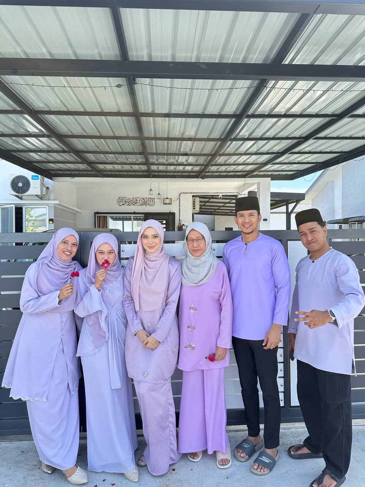
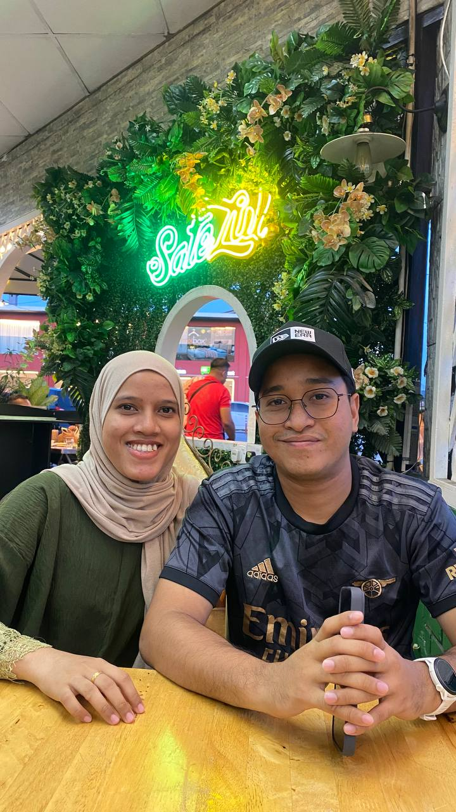
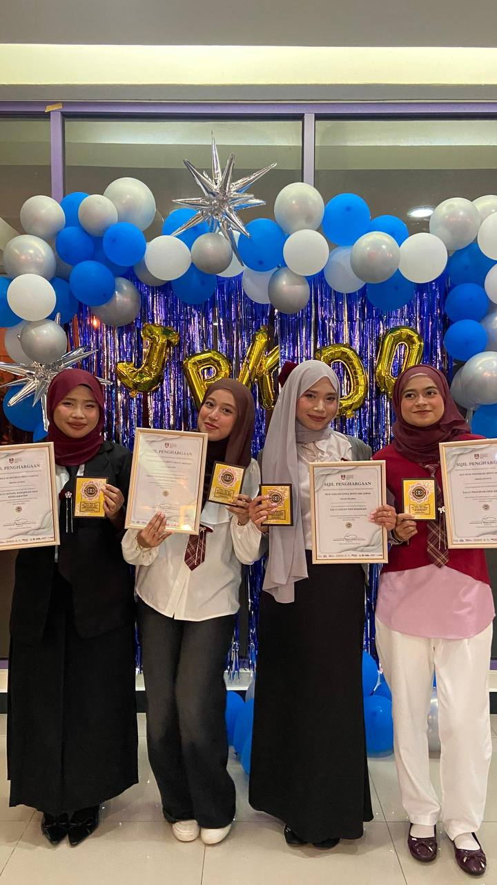
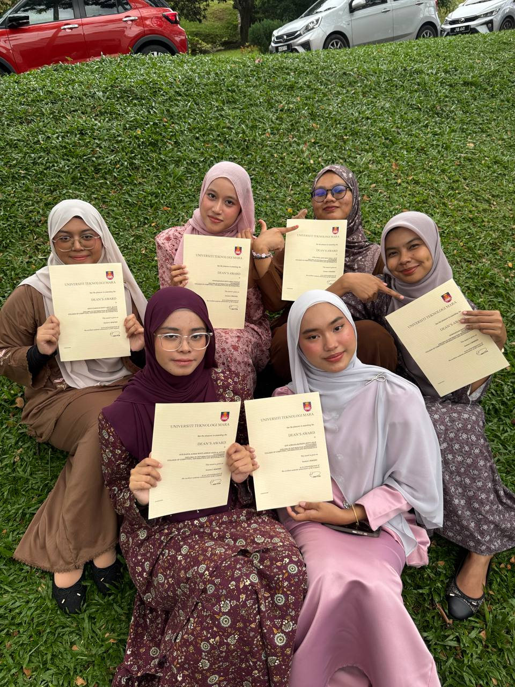

My name is Nur Maisarah, and I am the fourth and youngest daughter in my family.
Being the youngest has shaped my personality in many ways, as I have grown up
surrounded by care, guidance, and strong family values. This website is created
to introduce myself, share my personal background, and present meaningful aspects
of my life in a simple, creative, and organized manner. Through this platform,
I hope visitors can get to know me better, not only as a student but also as an
individual with interests, experiences, and goals for the future.
My Family


I come from a loving and supportive family, where I am the fourth and youngest daughter.
My family has always been a strong pillar in my life, providing emotional support,
motivation, and valuable life lessons. Growing up in a close-knit family environment
has taught me the importance of respect, responsibility, and gratitude. Their constant
encouragement inspires me to work hard, stay focused on my studies, and strive to become
a better person in both my academic and personal life.
My Friends


Friends play an important role in my life as they bring happiness, support, and
meaningful companionship. Through friendships, I have learned the value of trust,
teamwork, and understanding different personalities. My friends have been with me
during both joyful moments and challenging times, creating unforgettable memories
that I truly cherish. Their presence motivates me to stay positive, confident,
and balanced in my daily life.